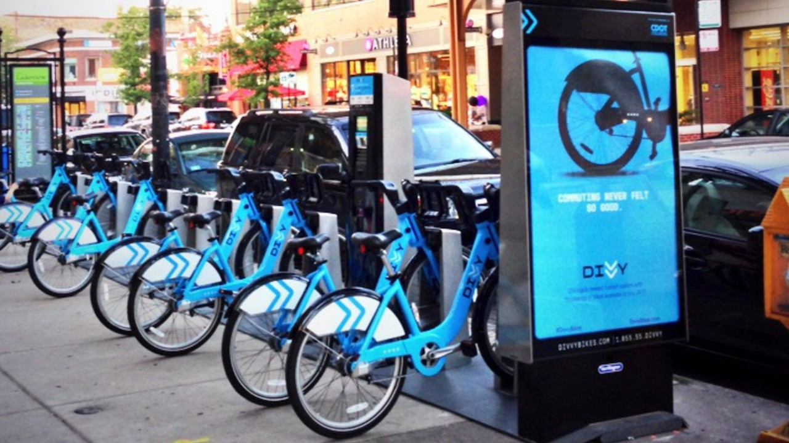

I began my career as an educator for 3 years. While working as an educator, I got the opportunity to become an exam coordinator for 2 years where my role was mainly related to student performance analysis which led me to be interested in Data Analytics, this motivated me to do different courses and projects related to Data Analysis. Chasing a passion for Analytics I have done different courses like Google Data Analytics, Career essentials for Data Analysis by LinkedIn and Microsoft, Advanced Excel Certification, Power Bi Certification, etc. I also got an opportunity to work under the Department of health as an Administrative Specialist in the Covid-19 Tracking project for 1 year. Currently, I’m seeking a new challenging career that will develop my skills and give me a chance to gain new experiences in a new environment as a Data Analyst. I now seek to be a part of a new team in which I can face new challenges to excel and become a part of the driving force of change. I am constantly working on self-development and on finding creative ways of improving the effectiveness and efficiency of any given task.

This project is the eighth course in the Google Data Analytics Certification where I had the opportunity to complete a case study. In this casestudy I choose an analytics-based scenario of a Cyclistic Bikeshare Company. I then asked questions, prepared, processed, analyzed, visualized and acted on the 12 months of data from the scenario using Power Query and Power BI.
For any company to enhance their clientele, organizations should devise an effective strategy to curtail their prevailing churn rates. As a result, most telecom companies have started adopting robust customer churn analysis solutions to improve the retention rate of profitable customers. In this project I used Power BI and conducted an Exploratory data Analysis on Customer Churn data and created a dashboard based on the EDA performed.
Analyzing student work is an essential part of teaching. Teachers assign, collect and examine student work all the time to assess student learning and to revise and improve teaching. Ongoing assessment of student learning allows teachers to engage in continuous quality improvement of their courses. Through this project using python I tried to identify the effects of various factors such as parental level of education, test preparation course etc. affect the performance of the students.
Sales Analysis provides insights into the past, present, and future performance of a business and can be used to forecast trends, identify opportunities for growth, and develop a strategic action plan for the company. Through this project we will analyze sales data from various aspects. The main objective here is Data Collection, Data Modelling, Data Cleaning /Data pre- Processing, creating UI Reports (Charts/Custom Charts),Additional Information(DAX Calculations), Implementing RLS( row level security),Creating workspace in Power BI Service, Publishing the report, creating Dashboard, implementing Gateway, Scheduling Refreshes, Added roles. Subscribe, alerts, Sharing the report and finally Creating App.
Employee attrition analytics is specifically focused on identifying why employees voluntarily leave, what might have prevented them from leaving, and how we can use data to predict attrition risk. Most importantly, this type of employee predictive analytics can be used to help organizations understand and design the interventions that will be most effective in reducing unwanted attrition.In this project I used various SQL queries to analyze employee attrition data.